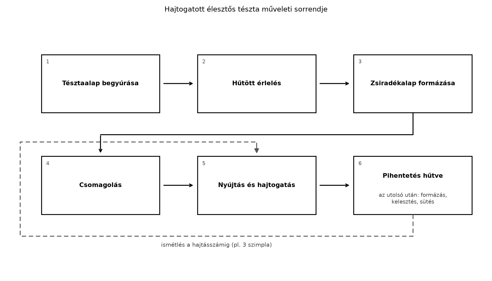

A hajtogatott élesztős tészta reggeli műszakban készülő, legsikeresebb termékeink alapja: a ropogós, leveles croissant, a dán gyümölcsös kifli vagy a briós-feuilletage. A vendég nem a tésztát veszi meg, hanem a ráharapáskor hallható roppanást, a puha belsőt és a vajas illatot. Ha a táblán csak „vajas kifli” van, de a termék tömör, zsíros benyomást kelt, akkor a hajtogatás nem sikerült. Ebben az alfejezetben a hajtogatott élesztős tészta alapját, a zsiradékalap készítését, a csomagolást, a hajtogatás fajtáit és a rétegszám számítását tanulod meg.

Definíció. A hajtogatott élesztős tészta olyan élesztővel lazított, finoman kevert tésztából készülő félkész termék, amelybe technológiai zsiradékot (vajat vagy leveles margarint) rétegezünk. A sütés során a zsiradékrétegek elválasztják egymástól a tészta hajszálvékony lemezeit, így leveles, ropogós szerkezet alakul ki.
A hajtogatott élesztős tészta lazítása itt kettős: a biológiai lazítás mellett (élesztő szén-dioxid-termelése) a mechanikai lazítás is meghatározó, mert a zsiradékrétegek közé szorult víz gőzzé alakul, és a rétegek közé feszülve szétemeli azokat. A tésztaalap és a zsiradékalap ezért együtt, de mégis egymástól elválasztva dolgozik: a tészta ízével és rugalmasságával, a zsiradék ropogósságával és zamatával járul hozzá a termékhez.
A hajtogatás műveletének sikeréhez a következő szabályokat kell betartanunk:
Szabály. 1. A tésztaalap hőmérséklete a hajtogatás kezdetén 4–8 °C, a zsiradékalap hőmérséklete 12–16 °C (ellenőrizendő: gyártói adatlap és NÉBIH-ajánlás). A két anyag állagának hasonlónak kell lennie. 2. A tésztát nyújtás közben nem szabad forrón, gyors mozdulatokkal elszakítani; a hajtogatáshoz mindig hűtött, laza állagú tészta kell. 3. A rétegek elválasztása érdekében a zsiradékréteg nem olvadhat meg a készítés során. Ha a vaj olvadni kezd, a tésztát azonnal hűtőbe kell tenni. 4. A hajtogatás után a pihentetés nélkül formázott tészta zsugorodik, ezért a pihentetőidőt mindig be kell tartani.
A tésztaalap (franciául détrempe) a hajtogatott élesztős tészta élesztős rétege. Összetétele az alap élesztős tésztához hasonló, de kevesebb zsiradékkal dolgozunk: liszt, tej vagy víz, élesztő, kevés cukor, só, és esetleg tojás, valamint egy kevés vaj vagy margarin. A zsír hozzákeverése itt a tészta rugalmasságát és ízét adja, nem a rétegezést. A tésztát rövid ideig, alacsony hőmérsékleten keverjük, hogy ne induljon meg erősen a sikérháló kialakulása, különben a nyújtáskor a tészta összegumizódik.
A zsiradékalap (tourage) formázható, de nem folyós zsiradék. Vaj esetén a vajat hidegen, de nem jéghidegen kell a kívánt téglalap alakúra formázni. Leveles margarin esetén a margarin eleve a hajtogatáshoz szánt, magasabb olvadáspontú, formázható zsiradék, amely a nyújtáskor kevésbé törik. A leveles margarinhoz képest a vaj alacsonyabb olvadáspontú, ezért nyári, meleg konyhán a tésztát gyakrabban kell hűteni, és szükség lehet a zsiradékalap hőmérsékletének pontos ellenőrzésére. A zsiradékalapnak mindig a tésztával egyező állagúnak kell lennie: ha a vaj túl hideg, törik, ha túl meleg, kifolyik.
Összefüggés. A hajtogatott élesztős tészta rétegzettségét a hajtások fajtája és száma határozza meg: - szimpla hajtás: a tésztát három rétegbe hajtjuk, vagyis a köteget háromszor tesszük egymásra: a zsiradékrétegek száma háromszorosára nő; - dupla hajtás: a tésztát négy rétegbe hajtjuk, vagyis a köteget négyszer tesszük egymásra: a zsiradékrétegek száma négyszeresére nő.
A hajtogatás közben a rétegszám nem lineárisan, hanem hatványozottan növekszik. A szimpla és dupla hajtások keveréséből más-más termékhez illő szerkezet alakítható ki. A gyakorlatban a croissant-hoz általában három szimpla hajtást adnak, a dán tésztához pedig gyakran két szimpla és egy dupla hajtást, hogy még levelesebb, de puhább legyen a belseje (ellenőrizendő: szakmai receptgyűjtemény).
Az alábbi metszet a csomagolás utáni köteget és az egymást követő szimpla hajtásokat mutatja: minden szimpla hajtás a köteget háromszor teszi egymásra, ezért a zsiradékrétegek száma 1 → 3 → 9 → 27 lesz (dupla hajtásnál négyszeres). A HTML-kiadásban szimpla és dupla hajtásokat adhatsz hozzá, és a számláló a tészta- és zsiradékrétegek számát is mutatja.
A technológia célja, hogy a tésztaalap és a zsiradékalap rétegei a
sütésig épek maradjanak, és a termék sütéskor hirtelen megemelkedjen. A
műveleti sorrendet itt általános alapreceptként tanítjuk, a konkrét
technológiai lapot a ### Gyakorlati útmutató részben
találod.
1. Tésztaalap begyúrása. A lisztet, élesztőt, sót, cukrot, hideg tejet vagy vizet, valamint a tészta zsiradékát dagasztógéppel vagy kézzel összedolgozzuk. A dagasztás rövid ideig tartson; a cél a nyersanyagok összeállítása, nem a tökéletes sikérháló kialakítása. A tésztát gömbbé formázzuk, és jól megjelölt, fedett edényben hűtőbe tesszük.
2. Hűtött érlelés. Az érlelés során a tészta pihen, a liszt fehérjéi megduzzadnak, a tészta könnyebben nyújthatóvá válik. Az érlelési idő jellemzően 30–60 perc, 4–8 °C hőmérsékleten (ellenőrizendő: üzemi gyakorlati adat, nem jogszabály). Itt nem a kelesztés a cél, hanem a lazítás és a hőmérséklet kiegyenlítődése.
3. Zsiradékalap készítése. A vajat vagy leveles margarint két sütőpapírlap között, enyhe nyújtással a tésztaalap méretének megfelelő, a tésztaalapra nyújtott téglalap felére, a közepére borítékszerűen ráférő téglalappá formázzuk. A zsiradékalap hőmérséklete 12–16 °C, hogy formázható legyen, de ne olvadjon. Ha vajon dolgozunk, a klasszikus hajtogatásban a vajba nem keverünk semmit, csak a hőmérsékletét figyeljük. A leveles margarin formázható, nem szükséges hozzá liszt.
4. Csomagolás (behajtogatás). A hideg tésztaalapot téglalapra nyújtjuk, a zsiradékalapot a tészta közepére helyezzük. A tészta széleit a zsiradékra hajtjuk, mint egy borítékot, hogy a zsiradék ne látszódjon ki. A zsiradékalapot teljesen be kell zárni; ha kint marad, a sütéskor a zsiradék kifolyik, a tészta pedig összeesik.
5. Nyújtás és hajtogatás. A becsomagolt tésztát a hajtogatási irányban óvatosan, egyenletesen nyújtjuk. A nyújtás iránya fontos: mindig az előző hajtás élétől merőlegesen kezdjük a nyújtást, hogy a rétegek egymásra simuljanak. A nyújtás után a tésztát szimpla vagy dupla hajtásba hajtjuk.
6. Pihentetés hűtve. Minden hajtogatás után 20–40 percre hűtőbe tesszük a tésztát. A pihentetés alatt a sikérháló ellazul, így a következő nyújtásnál a tészta nem zsugorodik, és a zsiradékréteg nem melegszik fel. A hűtő hőmérséklete 4–8 °C (ellenőrizendő: üzemi gyakorlat). A hajtogatott tésztát ekkor még nem kelesztjük.
7. Formázás és kelesztés. A hajtogatott tésztát a kívánt terméknek megfelelően vágjuk, formázzuk. A formázott darabokat kelesztőládában, letakarva, 26–30 °C-on, páratartalom mellett kelesztjük. A kelesztés időtartama a terméktől függ. A hajtogatott tészták kelését nem szabad túlzásba vinni, mert a zsiradékrétegek elmozdulnak, és a termék nem emelkedik meg szépen.
8. Sütés. A hajtogatott élesztős tésztákat forró sütőben, 190–220 °C-ra melegített sütőben sütjük. A magas hőmérséklet hatására a zsiradékrétegek közül felszabaduló víz hirtelen gőzzé alakul, a rétegek szétnyílnak, és a termék gyorsan megemelkedik. A sütési idő a termék méretétől és a sütő típusától függ, ezért a gyártói adatlapot és a receptúra hőfok-idő ajánlását mindig ellenőrizd.
Higiénia. Hajtogatás előtt minden eszközt (nyújtódeszka, nyújtófa, tésztanyújtó gép, kés) tisztítani és fertőtleníteni kell. A vaj és margarin zsiradékos felületet hagy, ezért a munkafelületet és a nyújtóeszközöket a munka végeztével is melegen mosogatni kell. A hűtőből kivett tészta kezelésekor is meg kell tartani a kézmosási és hajhálós előírásokat. A tésztát letakarással védjük a szennyeződésektől.
Kritikus pont. A hajtogatott élesztős tészta tojást és tejet is tartalmazhat, ezért a hűtve tárolás és a sütési hőmérséklet kritikus szabályozási pont lehet. A gyors hűtés és a megfelelő átsütés elengedhetetlen a mikrobiológiai biztonsághoz. A hűtve érlelt tésztát mindig jelölni kell dátummal és tartalommal. A kelesztés után hosszabb ideig szobahőmérsékleten tartott tésztát nem szabad később felhasználni, ha a hűtési lánc megszakadt.
A hajtogatás hatékonyságát a tészta- és zsiradékrétegek számával jellemezzük. A rétegszám azt mutatja meg, hogy a tésztaalapból hány lemez válik el egymástól a sütés közben. Minél több a zsiradékrétegek száma, annál levelesebb a tészta.
Jelölések és képlet: Legyen a szimpla hajtások száma, pedig a dupla hajtások száma.
Zsiradékrétegek száma:
Tésztarétegek száma (az egymásra fekvő tésztalapokat külön rétegként számolva; minden zsiradékréteget két tésztalap határol):
Összes réteg (tészta és zsiradék együtt):
A képletekben a kezdő állapot az ún. csomagolás utáni helyzet: tészta–zsiradék–tészta, vagyis 2 tésztaréteg és 1 zsiradékréteg. Egy szimpla hajtás a köteget háromszor teszi egymásra, ezért mind a zsiradék-, mind a tésztarétegek száma háromszorosára nő; egy dupla hajtás négyszeresére. (Ha az egymáshoz tapadó szomszédos tésztalapokat egy rétegnek számoljuk, akkor ; a könyvben a külön számolást használjuk.)
Példa 1. Croissant (3 szimpla hajtás). Adott: , . Keresett: , , .
Behelyettesítés:
Ellenőrzés: 3 szimpla hajtásnál a zsiradékrétegek száma , a tésztarétegeké . A zsiradékrétegek nem lehetnek többen, mint a tésztarétegek, mert minden zsiradékréteget két tésztaréteg határol (a hazai szakoktatásban is a „3 szimpla hajtás = 27 zsiradékréteg” elv ismert; ellenőrizendő: szakkönyv).
Példa 2. Dán tészta (2 szimpla + 1 dupla hajtás). Adott: , . Keresett: , , .
Behelyettesítés:
Ellenőrzés: a dupla hajtás nagyobb rétegszám-növekedést ad, mint egy szimpla hajtás, mert a köteget négyszer, nem háromszor teszi egymásra. A 108 összes réteg jóval több, mint a croissant 81 rétege, ezért a dán tészta még levelesebb, finomabb szerkezetű lesz.
Megjegyzés. A rétegszám-számítás a hajtogatási művelet elméleti képlete, de a gyakorlatban a nyújtás során a rétegek enyhén elmozdulnak, és a tészta nem mindig őrzi meg a tökéletesen szabályos rétegzettséget. A képlet arra jó, hogy a hajtogatási tervet elkészítsük, és a termék jellegét meghatározzuk. Ugyanezt a számítást fogjuk használni a Vajas és leveles tészta: mechanikai lazítás és hajtogatás alfejezetben, és a Hajtogatott élesztős uzsonnasütemények alfejezetben is, amikor croissant-hoz, dán tésztához vagy hajtogatott élesztős pogácsához készülünk.
Technológiai lap.
| Nyersanyag | Mennyiség (g) | Megjegyzés |
|---|---|---|
| Búzaliszt (BL 80) | 1000 | glutén |
| Tej (3,5 %) | 300 | tej |
| Víz | 200 | |
| Cukor | 100 | |
| Élesztő (friss) | 40 | |
| Só | 20 | |
| Vaj a tésztához | 100 | tej |
| Vaj a hajtogatáshoz | 400 | tej |
| Tojás a kenéshez | 50 | tojás |
| Tészta összesen | 2160 | nyers tészta, kenőtojás nélkül; a kenéshez külön 50 g tojás |
Eszközök és gépek: dagasztógép vagy kézi dagasztó, mérleg, hűtőszekrény, nyújtófa vagy tésztanyújtó gép, éles kés, vágókerék, sütőpapír, tepsik, kelesztőkamra vagy meleg, párás hely, sütő, sütőkesztyű, rács a hűléshez.
Higiéniai munkakezdés. Munkaruha, hajháló, tiszta kötény, rövid, tiszta köröm; ékszer le; kézmosás; a munkafelület és minden eszköz tisztítása, fertőtlenítése; a nyersanyagok átvétele, hőmérséklet és minőség ellenőrzése; a tojás és tej hűtőtárolása a felhasználásig.
Biztonsági korlát. A gépi művelet tanműhelyi vagy üzemi környezetben, oktatás után és felügyelet mellett végezhető; otthon háztartási géppel, kis adagban gyakorolj. A tésztanyújtó gép forgó hengerei közé kézzel benyúlni tilos; a dagasztógép keverőkarját csak a gép leállítása és áramtalanítása után tisztítsuk.
Műveleti sorrend (számozott lépések):
Kritikus pontok és technológiai kulcspontok: - A vaj hőmérséklete a hajtogatás kezdetén 12–16 °C; a tészta hőmérséklete 4–8 °C. Meleg konyhában minden hajtogatás után azonnal hűtőbe kell helyezni a tésztát. - A tésztát túl nedvesen, túl melegen vagy túl vékonyra nyújtva a vaj kifolyik; a rétegek egymáshoz ragadnak. - A kelesztés alatt a tésztát nem szabad 30 °C fölé melegíteni, mert a vaj kicsordul és a tészta összeesik. - A sütési hőmérséklet túl magasra állítva kívül megég, belül nyers marad.
Allergének: glutén (búzaliszt), tej (tej, vaj), tojás (a kenéshez használt tojás). Nyomokban más allergének is előfordulhatnak, ha az üzemben olajos magvakkal, földimogyoróval vagy szójával dolgoznak.
A hajtogatott élesztős tésztából készült termék minőségi jellemzői:
Az érzékszervi ellenőrzés során a frissen sült terméket meg kell vágni, hogy lássuk a belső szerkezetet, és meg kell kóstolni, hogy az íz és az állag megfelel-e az előállítási előírásnak. A tömegellenőrzéshez legalább 3–5 darab készterméket kell lemérni, és az átlagos tömeget a technológiai lapon rögzíteni.
Hiba 1: A vaj kifolyik a sütőben. - Tünet: a croissant alatt zsiradéktócsa gyűlik össze, a tészta lapos, tömör lesz. - Ok: a zsiradékalap túl meleg volt a hajtogatáskor, vagy a kelesztés hőmérséklete túl magasra emelkedett. - Megelőzés/javítás: a tésztaalapot és a zsiradékalapot a megadott hőmérsékletre kell hűteni; a kelesztőt nem szabad 30 °C fölé állítani. A már kifolyó vajú tésztát nem lehet megmenteni, de legközelebb a hőmérsékletet ellenőrizni kell.
Hiba 2: A tészta zsugorodik, a termék eltorzul. - Tünet: a croissant formája sütés után összehúzódik, a vége kinyílik. - Ok: a tésztát a hajtogatások után nem pihentettük le, vagy túl erősen gyúrtuk, így a sikérháló feszült maradt. - Megelőzés/javítás: a hajtogatások közötti pihentetési időt (20–40 perc hűtőben) mindig be kell tartani. A formázás előtt a tésztát hagyni kell 5–10 percig lazulni.
Hiba 3: A kész termék tömör, nem leveles. - Tünet: a croissant belseje kalácsszerű, sűrű, a rétegek nem válnak el. - Ok: a tésztát túl hideg, töredezett zsiradékréteggel hajtogattuk, vagy a sütő hőmérséklete alacsony volt, és a tészta lassan sült, nem képződött hirtelen gőz. - Megelőzés/javítás: a zsiradékalapot formázható állapotúra kell temperálni (12–16 °C), a sütőt pedig a megadott hőfokra kell melegíteni. Ha a sütő alulmelegített, a levélrétegek nem nyílnak fel.
Hiba 4: A termék nyers, ragadós belseje. - Tünet: kívül szép barna, belül még nyers, tésztás, kellemetlen. - Ok: a sütő hőmérséklete túl magas volt, ezért kívül gyorsan megkelt, belül nem sült át; vagy a termék túl nagy méretű volt. - Megelőzés/javítás: a sütő hőmérsékletét és az időt a termék méretéhez igazítani; nagyobb darabokhoz alacsonyabb hőfokon, hosszabb ideig sütni.
Egy nyári reggelen a cukrászüzemben a croissant-hoz való tésztát a szokásos recept alapján készítettük. A konyha hőmérséklete 28 °C volt, mert a klíma meghibásodott. A vajat a hűtőből kivettük, de a tésztaalap már melegedett, és a harmadik hajtogatásnál a vaj látványosan kenődött a nyújtódeszkán. A tészta felülete zsírosan fénylett, és tudtuk, hogy a rétegek össze fognak esni. A tésztát azonnal hűtőbe tettük 30 percre, és a következő műveletet csak akkor folytattuk, amikor a tészta hőmérséklete 8 °C alá, a vajé 15 °C alá csökkent. Ennek ellenére a tészta levélzete kissé szabálytalan lett, ezért a croissant-t nem a szokásos megnevezéssel adtuk ki: a tésztából csigákat és dán táskákat formáztunk, amelyeknél a szabálytalan levélzet nem minőségi hiba, és a terméket a valós jellemzőinek megfelelő néven értékesítettük. A tanulság: meleg konyhában a hajtogatott tésztát csak gyorsan, kis adagokban szabad készíteni, és állandóan hőmérővel kell ellenőrizni a tésztát.
1. feladat (A)
Magyarázd el röviden, mi a különbség a szimpla és a dupla hajtás
között!
2. feladat (A)
Sorold fel a hajtogatott élesztős tészta készítésének fő lépéseit a
tésztaalap begyúrásától a sütésig!
3. feladat (B)
Számítsd ki a tészta- és zsiradékrétegek számát, ha 2 szimpla és 1 dupla
hajtást végzünk! Add meg a teljes rétegszámot is!
4. feladat (B)
Egy konyhában a croissant tésztáját 3 szimpla hajtással készítik. A
vajrétegek száma 27. Hány tésztaréteg van a tésztában? Mennyi a
zsiradékrétegek aránya a tésztarétegekhez viszonyítva (százalékban)?
5. feladat (C)
A tésztaalapot 28 °C hőmérsékletű vajjal hajtogatták be. A tészta ragad,
a vaj folyik a nyújtódeszkán. Ismertesd a hibát, annak okát, és írd le a
megelőzés és a javítás módját!
6. feladat (D)
Készíts hajtogatott élesztős tésztát a
### Gyakorlati útmutató technológiai lapja szerint! Készíts
40 db croissant-t! A gyakorlat során töltsd ki a hajtogatási naplót:
minden hajtás után írd fel a tészta és a zsiradék hőmérsékletét, a
pihentetési időt, és a termék sütés utáni tömegét! Értékeld a kész
terméket a ### Minőségellenőrzés szempontjai szerint!
Igaz vagy hamis? A hajtogatott élesztős tésztához a vajat 30
°C-ra kell melegíteni, hogy a rétegek jól elváljanak.
Hamis. A vajat formázható, hűvös (12–16 °C) állapotban kell
használni, különben kifolyik, és a rétegek nem maradnak meg.
Sorold fel a szimpla és a dupla hajtás rétegszám-növelő
tényezőjét!
Szimpla hajtás: a tészta- és a zsiradékréteget is 3-szorosára
növeli.
Dupla hajtás: a tészta- és a zsiradékréteget is 4-szeresére
növeli.
Mi a teendő, ha a hajtogatás közben a vaj olvadni kezd?
Azonnal abba kell hagyni a nyújtást, a tésztát letakarva hűtőbe kell
tenni, és csak akkor folytatni, ha a tészta 4–8 °C-ra, a zsiradék 12–16
°C-ra visszahűlt.
Számítsd ki a tészta- és zsiradékrétegek számát, ha 1 szimpla és
2 dupla hajtást végzünk!
s = 1, d = 2
Z = 3¹ · 4² = 3 · 16 = 48
T = 2 · 48 = 96
Összes réteg = 96 + 48 = 144.
Mi a különbség a tésztaalap és a zsiradékalap technológiai
szerepe között?
A tésztaalap adja a termék szerkezetét, ízét, tápanyagát és a
kelesztéshez szükséges élesztőt; a zsiradékalap a sütés alatt gőzzel
elválasztja a tésztarétegeket, és ropogós, leveles textúrát hoz
létre.
1. feladat (A)
A szimpla hajtás során a tésztát három rétegbe hajtjuk (alsó harmad fel,
felső harmad rá), így a köteg háromszor kerül egymásra, és a
zsiradékrétegek száma háromszorosára nő. A dupla hajtásnál négy rétegbe
hajtjuk (a két szélét középre, majd a félbehajtott tésztát újra félbe),
így a köteg négyszer kerül egymásra, és a zsiradékrétegek száma
négyszeresére nő. A dupla hajtás nagyobb rétegszám-növekedést ad.
2. feladat (A)
A fő lépések:
1. Tésztaalap begyúrása.
2. Hűtött érlelés.
3. Zsiradékalap formázása.
4. Csomagolás.
5. Nyújtás és hajtogatás (szimpla vagy dupla).
6. Pihentetés hűtve.
7. Formázás.
8. Kelesztés.
9. Sütés.
3. feladat (B)
Adott:
,
.
Keresett:
,
,
.
A tésztarétegek száma 72, a zsiradékrétegek száma 36, az összes réteg 108.
4. feladat (B)
Adott:
,
,
.
Keresett:
és a zsiradék/tészta arány.
A tésztarétegek száma 54.
A zsiradékrétegek aránya a tésztarétegekhez:
A zsiradékrétegek a tésztarétegek 50 %-a (minden zsiradékréteget két tésztaréteg határol).
5. feladat (C)
Tünet: a tészta ragad, a vaj folyik a nyújtódeszkán, a hajtogatás
nehéz.
Ok: a zsiradékalap túl meleg (28 °C), meghaladja a formázható, de nem
olvadó 12–16 °C tartományt.
Megelőzés: a vajat mindig a megadott hőmérsékletre hűtve (12–16 °C)
használjuk, és a konyhát hűvösen tartjuk.
Javítás: azonnal abbahagyjuk a nyújtást, a tésztát letakarva hűtőbe
tesszük, amíg a vaj vissza nem szilárdul. Ha a vaj már kifolyt, a
tésztából nem lesz szép leveles termék, ilyenkor egyszerűbb kelt tésztás
termékké formázni.
6. feladat (D)
A gyakorlati feladatot a tanuló a technológiai lap alapján végzi el. Az
értékelésnél figyelni kell a következőkre:
A hajtogatott élesztős tészta a biológiai és mechanikai lazítás együttesén alapul. A tésztaalapot rövid dagasztással, hidegen érleljük, majd formázható, 12–16 °C-os zsiradékalapot (vajat vagy leveles margarint) csomagolunk bele. A nyújtás és hajtogatás során a tésztarétegek és a zsiradékrétegek száma hatványozottan nő. Szimpla hajtásnál a rétegszám-szorzó 3, dupla hajtásnál 4. A rétegszám számítása: ; ; . A hajtogatások között 20–40 perc hűtőben való pihentetés szükséges (4–8 °C). A kész tésztát formázás után 26–30 °C-on kelesztjük, és magas hőmérsékletű sütőben, 190–220 °C-on sütjük (ellenőrizendő: gyártói adatlap). A leggyakoribb hibák: a vaj kifolyik, a tészta zsugorodik, a termék tömör lesz, vagy belseje nyers marad. Továbbvitt eredmény. A hajtogatás és a rétegszám-számítás ezen ismereteit használjuk a Vajas és leveles tészta: mechanikai lazítás és hajtogatás alfejezetben, valamint a Hajtogatott élesztős uzsonnasütemények alfejezetben, amikor croissant-t, dán tésztát vagy hajtogatott élesztős pogácsát készítünk.